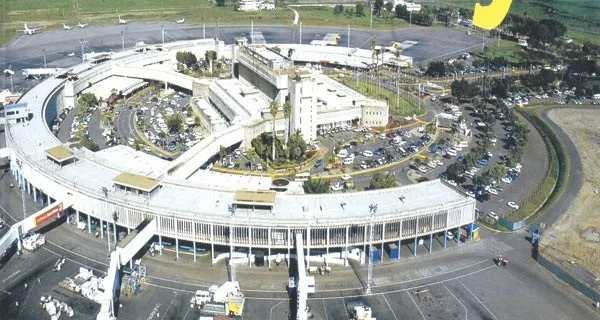
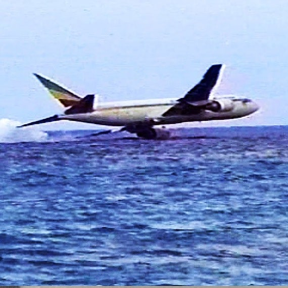

ETH961 Hijacking
November 23rd, 1996
Ethiopian Airlines Flight 961
From Addis Ababa
To Abidjan
outline
사건명
에티오피아 항공 961편 납치 사건
납치 항공편
에티오피아 항공 961편
출발지
아디스아바바
목적지
코트디부아르 아비장
사건 발생지
그랑드코모르 섬
범인
남성 3명
info
1996년 11월 23일, 에티오피아 아디스아바바에서 에티오피아 항공 961편이 이륙했다. 비행기가 이륙한 후 적당한 시점이 되자 남성 3명이 자신들이 무기와 폭탄을 가지고 있는 것처럼 위장했다. 이들은 자신들이 에티오피아 정부에 저항하다 투옥됐던 정치범이라고 주장하였으며, 에티오피아에서는 더 이상 안전을 보장받을 수 없어 정치적 망명을 원한다고 주장했다. 이들은 기장에게 호주로 갈 것을 요구했지만 기존에 나이로비

아디스아바바에서 출발해 나이로비, 콩고 등을 경유해 최종적으로 아비장으로 향하는 비행기였다. 따라서 나이로비까지의 연료만 비행기에 있었다.
에서 재급유를 받을 예정이라 호주까지 갈 연료가 없는 상황이었다. 하지만 납치범들은 기장의 말을 귀담아 듣지 않았다. 막무가내로 들이대는 납치범들 때문에 기장은 그들의 요구대로 기수를 돌리는 시늉을 하며 비상착륙을 위해 아프리카 대륙 동부 해안선을 따라 비행했다. 끝까지 납치범은 고집을 피우며 호주를 갈 것을 요구했고 결국 연료가 떨어져 비상 착수

항공기가 비상 상황으로 인해 바다나 강 등 수면에 의도적으로 착륙하는 것을 뜻하며 항공기 조종술 중 가장 고난도의 기술이다.
밖에 방법이 없게 되었다. 기장은 최대한 피해를 최소화하기 위해 노력했지만 비상 착수 및 승객들의 안전 매뉴얼 무시
일부만 비상 착수로 인한 충격으로 사망했고 대부분 구명조끼 착용 매뉴얼을 제대로 이행하지 않았다.
로 인해 9.11 이전 하이재킹으로 가장 많은 사람이 사망한 사건이다.

아디스아바바에서 출발해 나이로비, 콩고 등을 경유해 최종적으로 아비장으로 향하는 비행기였다. 따라서 나이로비까지의 연료만 비행기에 있었다.

항공기가 비상 상황으로 인해 바다나 강 등 수면에 의도적으로 착륙하는 것을 뜻하며 항공기 조종술 중 가장 고난도의 기술이다.
일부만 비상 착수로 인한 충격으로 사망했고 대부분 구명조끼 착용 매뉴얼을 제대로 이행하지 않았다.